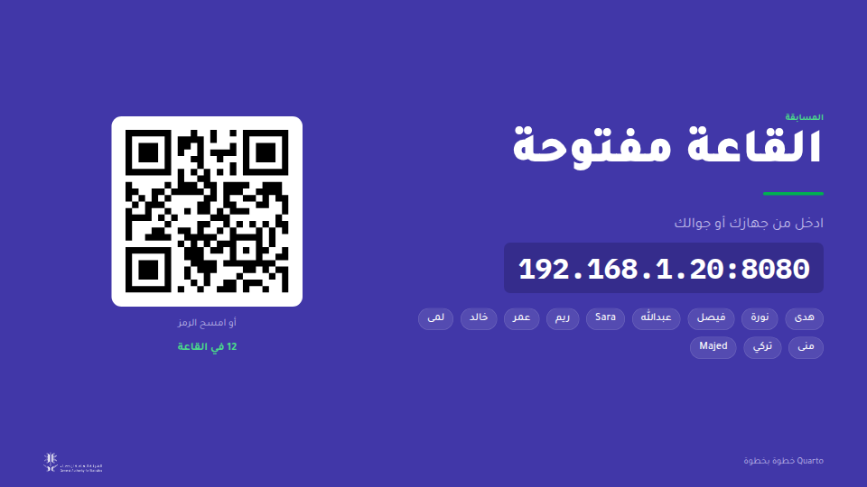
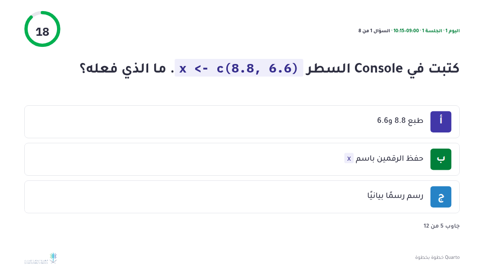
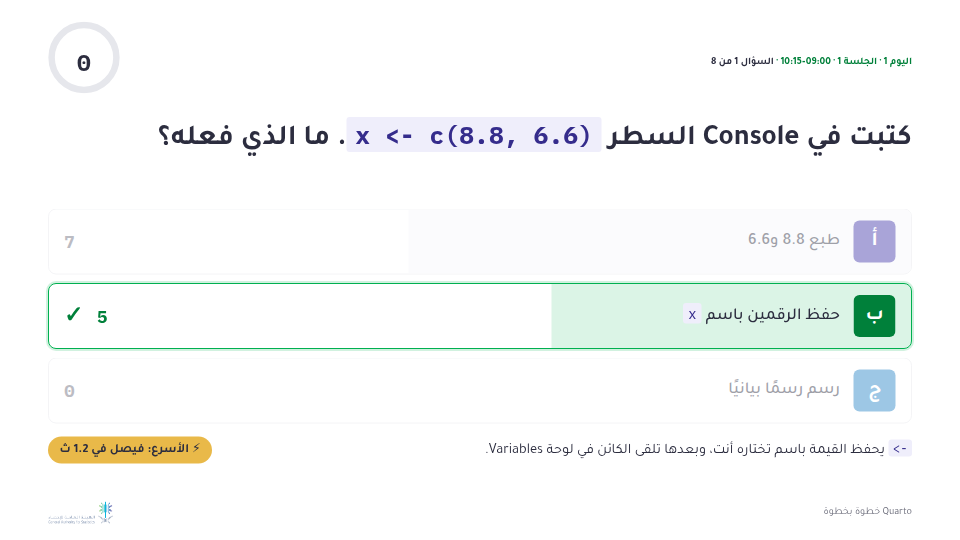
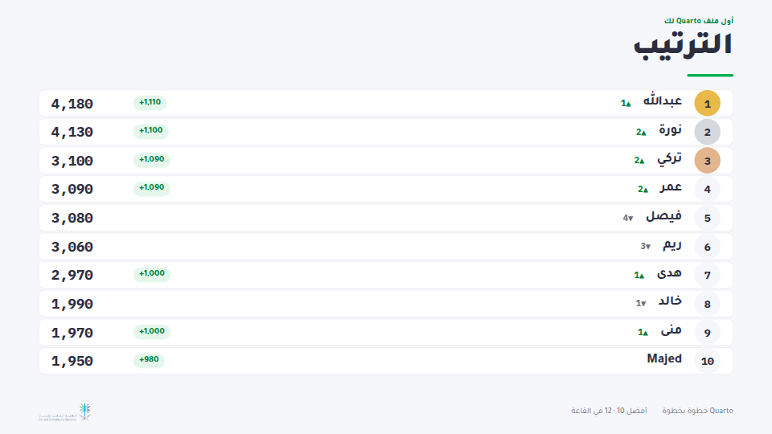
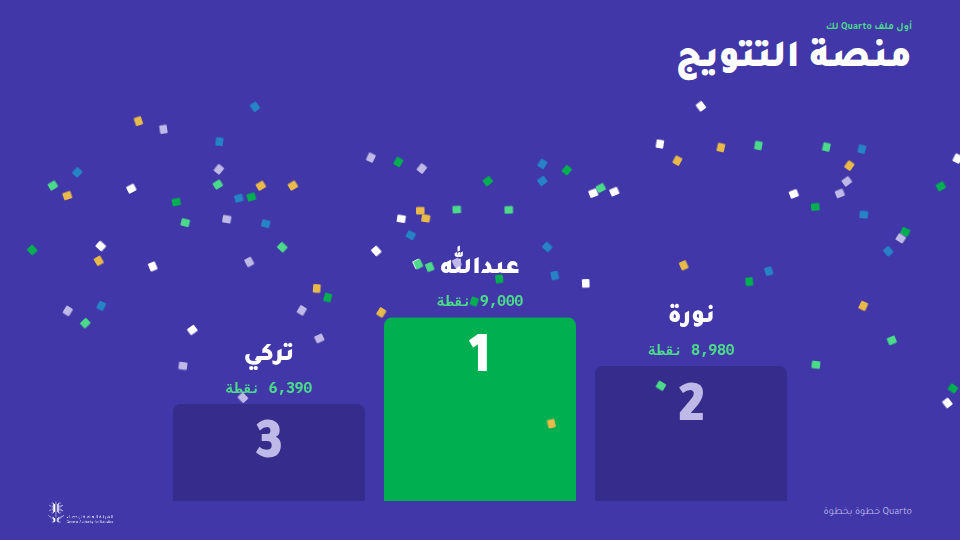
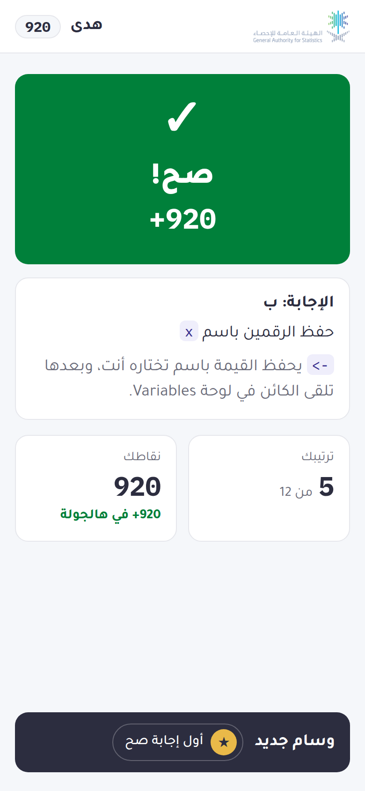

Quarto خطوة بخطوة
تقاريرك وعروضك تخرج مباشرة من كود R. وكل ميزة نشرحها بمثال يُبنى أمامك: الملف على اليسار يكبر خطوة خطوة، وعلى اليمين تشوف ما يصنعه Quarto منه في كل خطوة.
ابدأ من هناكيف يشتغل Quarto
ملفك يدخل، وknitr يشغّل كود R، وPandoc يكتب الصفحة. خمس خطوات، كل واحدة منها مأخوذة من توليد (render) حقيقي.
خريطة الدورةثلاثة أيام، تسع جلسات، وثلاثة تطبيقات عملية
كل يوم فيه ثلاث جلسات، وبعدها تطبيق عملي مدته 45 دقيقة يُختم باختبار الإنجاز.
تقرير واحد من ملف فارغ
Markdown وYAML، وخيارات الـ chunks، والأرقام داخل النص، والأشكال والجداول، والإحالات، وترتيب الصفحة.
التقرير، في كل مكان
Word وPDF من ملف واحد، والمُعامِلات، و13 منطقة من سكربت واحد، والهوية المؤسسية، والعربية.
التحليل نفسه، في عرض تقديمي
شرائح Revealjs، وتخطيطها، وإيقاع العرض، والكود على الشريحة، والحركة، والهوية المؤسسية، ومشاركة العرض.
هدية الختامقالب الهيئة، جاهز للاستخدام
كل اللي بنيناه في الدورة، في مجلد واحد بهوية الهيئة. انسخه وولّده، وابدأ منه شغلك.


من الملف المضغوط إلى تقريرك
- فك الضغط وافتح المجلد في Positron
- قم بعمل render لـ
report.qmd؛ وإذا تبي منطقة ثانية، استخدم:quarto render report.qmd -P region:Riyadh - شغّل
slides.qmdليطلع لك العرض المختصر. - حط بياناتك في
data/واكتب نصوصك في التقرير theme_gastat()وtt_gastat()يعطون كل رسم وجدول هوية الهيئة
للمدرّب · المسابقةمسابقة مباشرة ولوحة ترتيب
أسئلة كل جلسة وجولات السرعة تصير جولات مباشرة: السؤال على شاشة القاعة، والإجابة من اللابتوب أو الجوال، والنقاط على الصح وعلى السرعة، وترتيب واحد يمشي معكم الأيام الثلاثة. تشتغل من جهازك بـ Python وبس، وما تحتاج إنترنت.






طريقة التشغيل
- فك الضغط، وشغّل
python3 room.pyداخل المجلد. بيطلع لك ثلاث عناوين. - افتح لوحة التحكم (
/host) على جهازك، وشاشة العرض (/board) على البروجكتر. - المشاركون يدخلون من العنوان أو رمز QR اللي على الشاشة، وهم على نفس الواي فاي اللي عليه جهازك. ولو الشبكة تفصل الأجهزة عن بعض، شارك نقطة اتصال جوالك.
- شغّل جولة الجلسة في آخر عشر دقائق منها، وجولة السرعة تناسب نهاية التطبيق العملي.
- من قائمة المشاركين، أعطِ 500 نقطة لاجتياز اختبار الإنجاز، و300 لعرض الشغل أمام القاعة.
الإجابة الصح تجيب 500 نقطة، ومعها إلى 500 زيادة حسب السرعة. وكل إجابة صح على التوالي بعد الأولى تضيف 50، إلى حد 250.
النقاط تنحفظ في room-state.json على جهازك: سكّر المسابقة آخر اليوم وشغّلها بكرة، وتكمل من مكانك. والأسماء ما تطلع من القاعة.
الأمثلة مبنية بـ HyperFrames، وتشتغل في المتصفح بدون ما تجلب أي شيء من الإنترنت. يعني الدورة كلها تشتغل حتى على جهاز مفصول عن الشبكة.